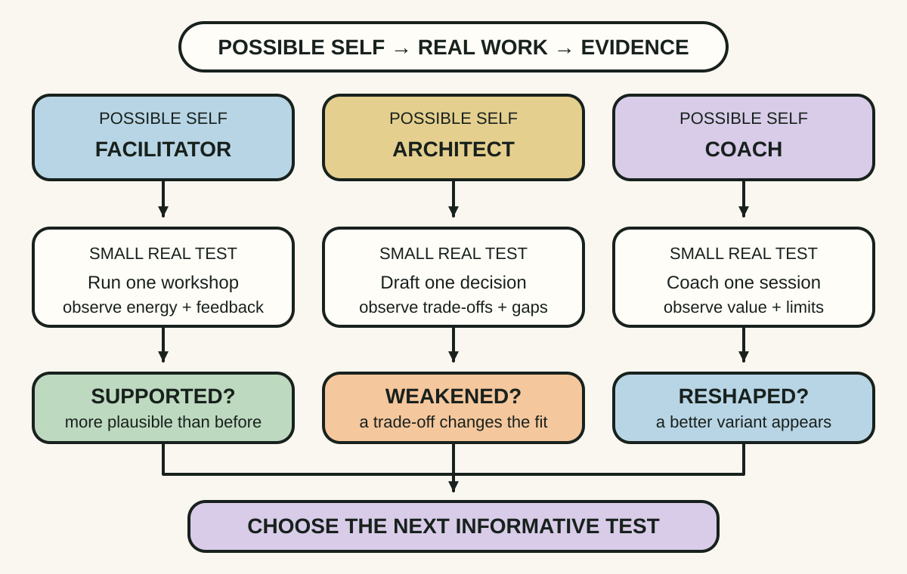
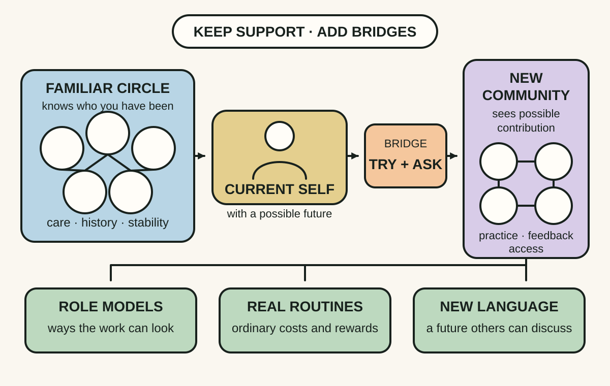
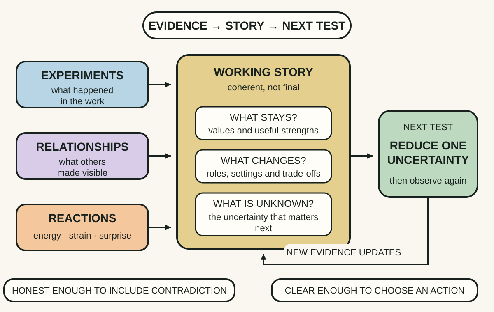

Daily lesson ·
Working Identity
Treat a career change as a test-and-learn process: try possible selves in real work, widen the people who can imagine your future and build a story from evidence rather than wishful certainty.
Idea 1
Test possible selves in real work #
The idea
Ibarra argues that substantial career change often follows an act-then-think sequence. A working identity was built through years of activity, relationships and feedback, so introspection alone tends to recycle the assumptions of the current role. Career changers learn more by crafting limited identity experiments: side projects, temporary assignments, volunteering or other small ways to perform part of a possible future.
A possible self is a hypothesis, not a promise. Testing several versions lets a person compare fantasy with lived experience, notice which skills and trade-offs are real, and use internal reactions plus external feedback before making a harder-to-reverse commitment.

Why it matters
A polished job description cannot reveal the daily texture of the work, your appetite for its constraints or how others respond to you in the role. A small test can replace imagined certainty with specific evidence while preserving options.
Apply it today
Name one professional identity you are curious about, such as facilitator, architect, coach, analyst or independent maker.
Define one reversible sample of its real work that you could complete without resigning, then write the observation that would make the identity more or less plausible.
Caveat or failure mode
An enjoyable trial can overrepresent novelty, autonomy or a friendly setting. Test routine and difficult parts as well as attractive ones, and do not treat one good afternoon as evidence that the economics or full role will fit.
Idea 2
Change the people who can imagine you #
The idea
Ibarra argues that career identities are social as well as personal. Friends, trusted colleagues and long-standing mentors often care deeply, yet they know and depend on the familiar version of us. Their advice can unintentionally pull a substantial change back toward safe variations of the existing path.
Career changers therefore interact with new networks, role models and communities connected to possible futures. These relationships reveal unfamiliar ways of working, supply language and examples for an emerging identity, and create settings where the new version of the person is not already constrained by an old reputation.

Why it matters
A career option stays abstract when nobody around you does the work or recognises you in it. New connections expose hidden routines and entry paths while giving an emerging identity a social place to develop.
Apply it today
Choose one possible self and identify one person, community or event just outside your normal professional circle where that work is already visible.
Ask one experience-seeking question, such as what the work feels like on an ordinary difficult week, or offer a small contribution that lets both sides observe fit.
Caveat or failure mode
New networks can romanticise their field, reproduce exclusion or invite unpaid work that benefits others more than the learner. Compare perspectives, set boundaries and treat access barriers as real constraints rather than a failure of confidence.
Idea 3
Build a story from emerging evidence #
The idea
Ibarra's third practice is making sense of what happens during transition. Experiments, new relationships, setbacks and small wins arrive as fragments. A transition story connects them into an account of what is changing, what still matters and why a next direction now deserves attention.
The story should be coherent enough to guide action and help other people understand the transition, but provisional enough to change when new evidence arrives. Sense-making is iterative: action changes the story, and the revised story helps choose the next experiment.

Why it matters
Without a story, experiments can feel like unrelated hobbies and a non-linear transition can look like failure. With a story that is too polished, disconfirming evidence disappears. A revisable account holds direction and honesty together.
Apply it today
After one career experiment, write three lines: what the result supported, what it weakened and what remains unknown.
Finish with one sentence linking the evidence to the next test: Because I observed ___, I will now test ___ before deciding ___.
Caveat or failure mode
Humans can make almost any sequence sound inevitable after the fact. A compelling story may become personal branding that protects the preferred answer, so keep dates, observations and contradictory feedback beside the narrative and revise it explicitly.
Knowledge check · 6 questions
Learning check
Answer all 6, then check your answers. Your first result stays in this browser, and each explanation appears after you check. A 3-question review can appear on the homepage from tomorrow.
6 questions not yet answered.
Today's experiment · 10 minutes
Turn three possible selves into one next test
- Write three professional identities you could plausibly explore without deciding that any is your destination.
- Beside each, name one reversible sample of its real work and one observable result that would change your view.
- Circle the test that would reduce the most important uncertainty for the least irreversible cost.
- Write its first action, who can help you enter the setting and when you will do it.
Observable result: You finish with three career hypotheses and one scheduled action capable of producing new evidence.
Retrieval practice
Spaced recall
- From Continuous Discovery Habits: what makes a small test reduce uncertainty rather than merely confirm a preferred answer?
- From The Staff Engineer's Path: which kind of influence grows through relationships rather than formal authority?
Verification
Source notes
These links support the attributed claims and edition details; applications and extensions are labelled in the lesson.
One-sentence takeaway